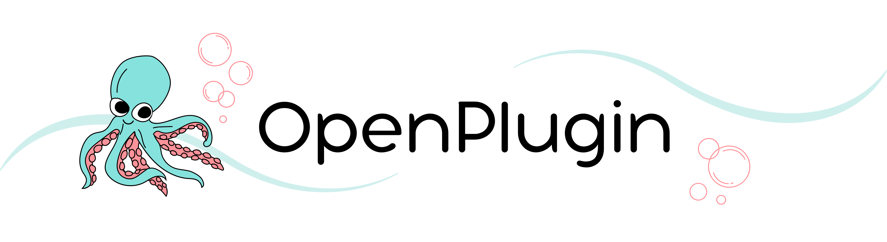
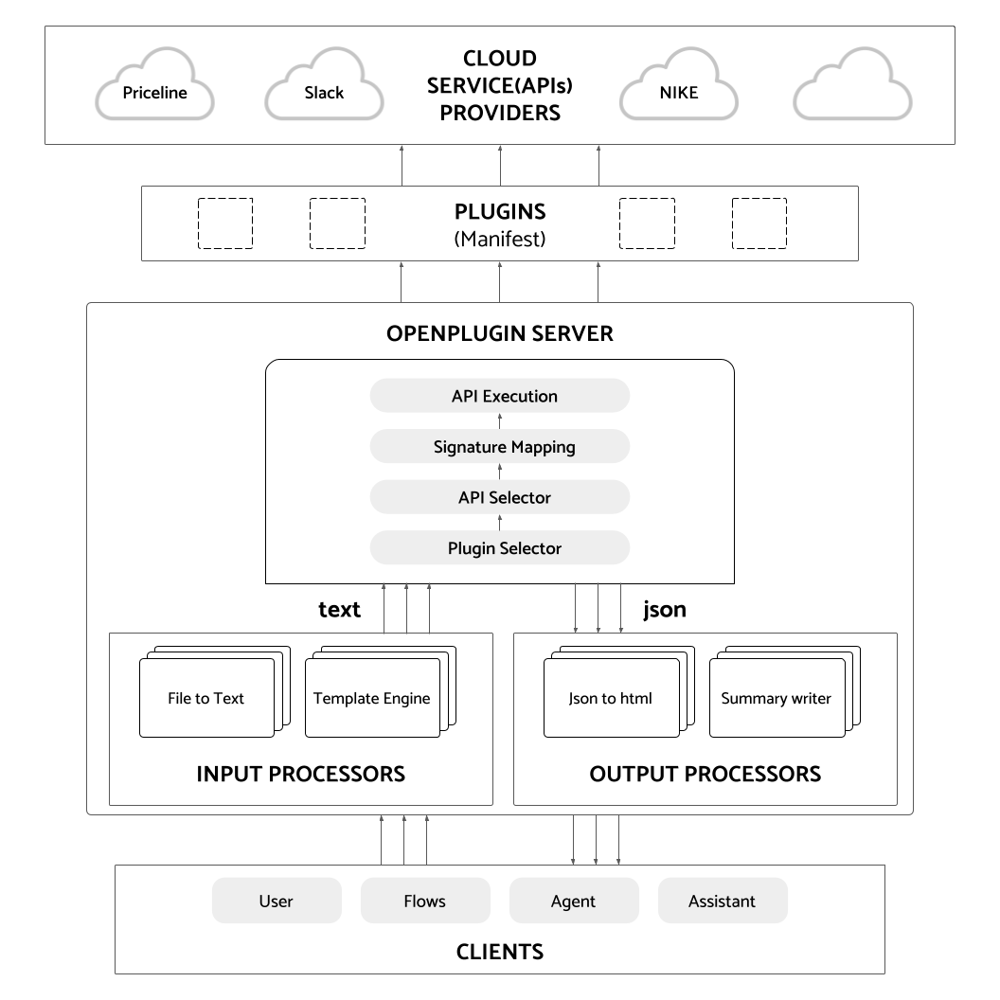

Documentation#
Multimodal API Bridge - make APIs into chat and multimodal ready interfaces. serverless optional.

Summary#
This is an open source effort to create an ecosystem around LLM enabled APIs. We make it easy to “chat with an API”, that is, to send natural language as the input to the API and have it process it. Then, we offer several options to easily transform the APIs response into something better suited to human consumption like text, markdown, HTML, JSX, voice, video, etc.
Design Decisions:
LLM neutral (LLMs leapfrog each other in capability; swap easily, support many)
Framework neutral (langchain, semantic kernel, …)
Deployment model neutral (serverless, containers, k8, … )
Language neutral (our manifest is declarative JSON)
Client neutral (e.g., we’re not hard coded to ChatGPT or Gemini, …)
Multimodal opinionated (it’s built into our architecture from day 1, but you choose providers)
Flow / agent neutral (it’s a layer above us)
Quality control opinionated (we encourage regression tests for plugins)
Cloud neutral (offer containers, offer serverless, …)
Architecture#

Why not use OpenAPI/Swagger?
OpenAPI (previously, Swagger) was released over a decade ago as a replacement to WSDL, where they switched the interface description from XML to JSON. Both WSDL and OpenAPI focused on the machine-to-machine use case. They answered the question, how can we describe an API in a formal manner to bind a client with a service. OpenAPI describes many of the concepts needed, but falls short in the new GPT oriented requirements.
About OpenPlugin Manifest:
The OpenPlugin Manifest is a superset of the OpenAPI effort. It focuses on improving a few key areas including:
Accuracy is a core element
Emphasis on quality: linked to regression tests
Integration w/marketplace a priority
Ensure security; agent oriented reputation
NOTE: This project provides a standard way to define LLM plugins and present them to various LLM engines. It is vendor neutral and meant to facilitate plugin portability across vendors and projects. The project introduces the OpenPlugin manifest file format, which allows developers to specify properties and settings for their plugins such as name, version, dependencies, and supported platforms. This format enables seamless integration with plugin platform providers.
OpenPlugin addresses the problem of mapping natural language instructions to API calls. It involves using a tool selector to determine the intent of the command and mapping it to an API. Our reference implementation also evaluates the accuracy of the tool selector:
selecting the correct plugin,
selecting the correct API operation,
filling in API parameters correctly, and
authenticating and calling the API correctly.
monitoring the cost and round-trip latency of solving the problem
Basic Scenario
Target Plugin: Google Finance API
Input Request: “Get the stock price for Amazon.”
Optional Responses:
standard JSON response object
a formatted response (HTML, Markdown, JSX, …)
a multimodal response (text-to-voice, image, …)
Terminology#
Since OpenPlugin exists within a rapidly evolving domain, the terms relating to its design space are similarly evolving. Within the context of OpenPlugin, the following are the relevant terms and their meanings:
1. Plugin: A runnable software module that accepts text or multimodal input, runs some API or code, and returns text or multimodal output.
2. Plugin Manifest: A file in OpenPlugin-defined format containing metadata associated with a plugin that defines capabilities provided by the plugin and how to access them.
3. Published Plugin: A plugin that has been documented, tested and published to a personal profile or a marketplace catalog. Catalogs can be public or private.
4. Hosted OpenPlugin Provider: OpenPlugin is an open source project and everyone is encouraged to host their own implementation. The OpenPlugin software can deployed in a serverless environment, as a container, or as a framework. The hoster can choose to make their instance public or private.
5. OpenPlugin Network: The project sponsor, Imprompt, offers a geo-distributed, managed service of public and private hosts.
Important
This documentation was generated on Mar 26, 2024.